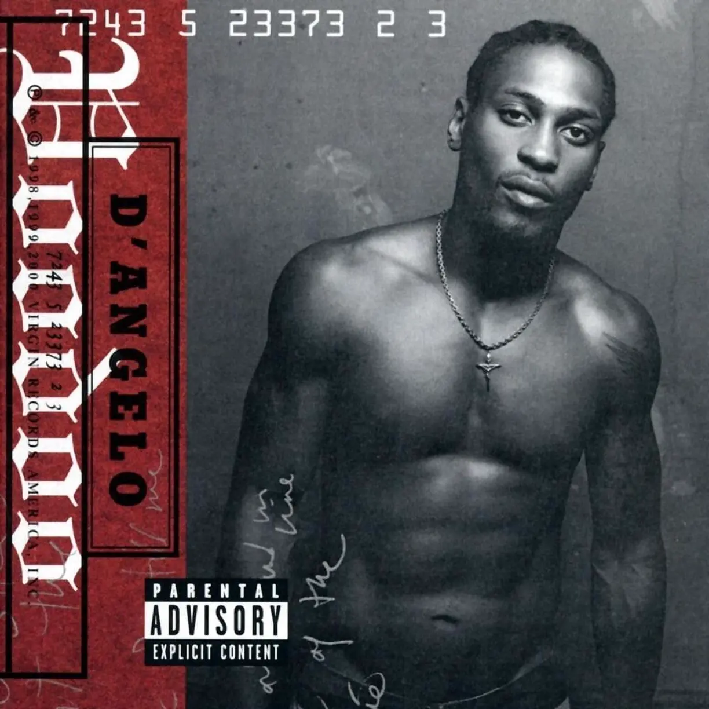
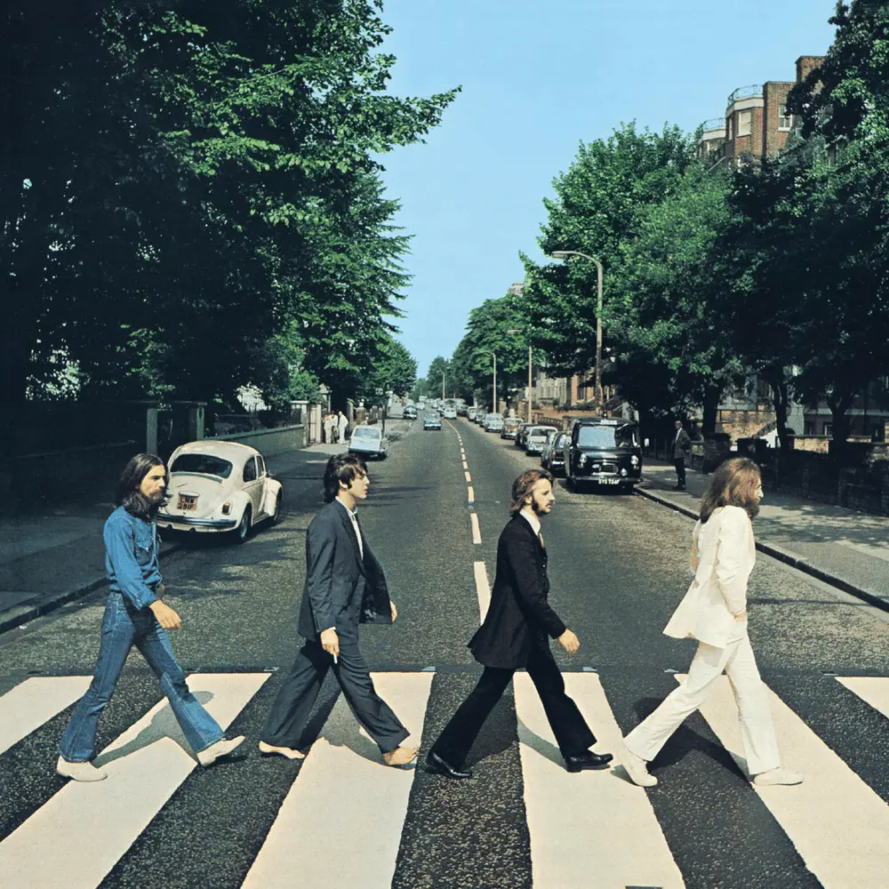

Album#6
Voodoo
{kind=link}

专辑信息
- 专辑名称：Voodoo (Wikipedia)
- 歌手：D'Angelo (Michael Eugene Archer (February 11, 1974 – October 14, 2025)) Rest in peace, D'Angelo.
- 年份：2000-01-01
- 风格： Neo soul、R&B、funk、soul、jazz、psychedelic soul (迷幻灵魂乐)
- 时长：78:54

「艺术不是手艺，
它是艺术家所体验过的情感的传递。」
Voodoo 正是如此：
一种情感的传递。
不是文字，不是清晰的论点，
也不仅仅是又一张制作精良的歌曲合集。
纯粹就是感觉。
上面那段話的來源
文字是很好的沟通方式，对吧？比如我们都同意，当我说「唱片」这个词时，它指的就是这些东西之一；或者当我说「贝斯」时，它指的也是这些东西之一。这是个好系统，但当你为所有事物都贴上标签和名称时，随之而来的就是某些固有的期望。比如，贝斯就应该有四或五根弦，而不是六根 ⸺ 我对此坚决不让步。它应该按某种方式调音。这才叫贝斯，对吧？一张唱片应该是12英寸宽，以 33 RPM（Revolutions Per Minute）的速度播放，或者是 7 英寸 45 转。你懂的。我的意思是，文字和标签带来了期望，而这些期望有时会妨碍我们体验事物本来的样子。
但你有没有和一个婴儿待在一起过？别走开，听我说完，这很值得。我有个宝宝，所以我常想这些事。婴儿对事物没有概念，他们没有那些同样的期望。他们只体验当下正在发生的一切，以其最纯粹的形式，就像我们所有人最初那样。对于音乐，我们很多时候会陷入事物「应该」如何运作的思维定式中，比如你必须有适合电台播放的歌曲，有清晰、上口的副歌，所有元素都严丝合缝。但这张专辑抛弃了所有这些传统。里面大多数歌曲都有六七分钟长，节奏感很松散，你甚至听不清 D'Angelo 到底在唱些什么。这就是 D'Angelo 将音乐带回其最纯粹的形式，没有任何标签或期望。
我非常喜欢列夫·托尔斯泰的一句话 ⸺ 我知道这个结尾的转折很疯狂 ⸺ 但这句话是：「艺术不是手艺，它是艺术家所体验过的情感的传递。」Voodoo 正是如此：一种情感的传递。不是文字，不是清晰的论点，也不仅仅是又一张制作精良的歌曲合集。纯粹就是感觉。
Voodoo: How D'Angelo Created a Masterpiece by Digging The Greats
最早知道 Voodoo 这张专辑，是在 听完这些专辑还不爱 Neo-Soul 的，我真没见过！ 里看到的，视频里推荐了很多张 Neo-Soul 的专辑，我也分享过其中的一张：Album#1 - The Miseducation of Lauryn Hill。
刚开始听 Voodoo，我其实有些欣赏不来，里面的旋律给人一种「一瘸一拐」的感觉，后来才知道这是故意的，一种叫 layback 的技巧（通过落后于节拍来营造一种效果），这会形成一种松散的节奏，听起来比较随性，给人一种松弛感，但整体又是紧密的。
关于「一瘸一拐」的感觉
松弛之美: D’Angelo的节奏哲学｜缅怀Neo-Soul教父｜硬核拆解 by PM 玩乐志
文字摘录
怎麼樣？能感受到嗎？這個 beat 的錯位程度可能沒有那麼大，相對比較細膩。所以接下來，我把它錯位程度調整得更誇張一些，你是一定可以聽出這種感覺的。
現在聽出來那種一瘸一拐的、節奏上的放縱感了吧？特別地鬆弛。就是這種非常奇怪的錯位節奏的審美偏好，當年把 D'Angelo、J Dilla 還有 Questlove 這些傳奇的音樂人聚集到了一起，從而造就了後面無數的經典作品。
但 D'Angelo 音樂律動裡的那種鬆弛感，可不只是來自於這些鼓組的小錯位，就連旋律樂器的演奏它也是錯位的。彼此之間疊加到一起，那個感覺真是鬆弛到了極點，而我每次聽的時候，心裡面也是抓心撓肝地癢到了極點。
它的贝斯演奏越到后面是越来越拉扯。一般底鼓和贝斯都是咬在一起的，是「嘣嘣嘣嘣」。但是这首歌到后面，它的底鼓和贝斯就变成了「的嗯的嗯的嗯的嗯」，二者是错位的。一般歌曲的节奏听感是「哒哒哒哒」，但是这首歌它的节奏听感则是「Blabla boom, Blabla boom, Blabla boom」。几乎每一个演奏点上都是劈里啪啦，「大珠小珠落玉盘」的感觉，极其地松弛。而这种松弛感的来源，就是乐器之间的节奏微微错位所导致的。
专辑整体给我的感觉，就像是在现场听乐队即兴演奏，乐队跟着自己的感觉走，沉浸其中，你猜不到接下来会有什么，你能做的就是享受演奏，感受它。
D'Angelo 的歌声也像是一种乐器，有层次很丰富的和声，器乐不是背景用于衬托歌声，而是和歌声同等突出，是融合在一起的整体，都会抓着你。
關於 D'Angelo 的人聲
Saul Williams 写道，你可能会回应：「歌词，老兄，D'Angelo 唱的那些玩意我一半都听不懂。那哥们儿听起来就像抽了鸦片的 Bobby McFerrin。」我会说：「你说得对，我也听不懂。但我却被吸引，想弄明白他到底在唱什么。他的声音拼贴让我着迷。」
首先，「抽了鸦片的 Bobby McFerrin」，这个比喻十分给十分，堪称完美。歌词其实没那么重要。是的，歌词也印在专辑内页里，但你得特意去找才行。 D'Angelo 把他的声音当作另一种乐器来使用。就像，想象一下，如果这张专辑全是器乐，但你又想加入人声。我的意思是，从技术上讲，歌手总得唱点什么词吧。但如果你把所有的人声都层层叠加，让整个感觉放松下来，并弱化听懂他所有歌词的必要性呢？那会是什么感觉？
Voodoo: How D'Angelo Created a Masterpiece by Digging The Greats
在这张专辑中，我们看到 D'Angelo 不断挑战「事物本应如此」的观念。
如果我们放松整个乐队，拓宽空间，那会是什么感觉？
如果我们稍微弱化歌词，那又会是什么感觉？
如果我们没有一个约定俗成的歌曲形式，只是跟着彼此走，那又会是什么感觉？
Voodoo: How D'Angelo Created a Masterpiece by Digging The Greats
歌词 & Review
-
Voodoo 的开场曲是一首自吹自擂、简约的 funk 歌曲，以一种略带威胁的基调拉开了专辑的序幕。这是 D'Angelo 在制作 Space Jam soundtrack 时为专辑录制的第一首歌曲，其中包含许多篮球方面的引用。
-
一首抨击金钱至上和物质主义过度的 Hip Hop 歌曲。
所有人都为了一块 「Devil's Pie」排着队、争破了脑袋、出卖着灵魂。
这有点像一首布鲁斯歌曲。我想说，这首歌人声的精神更像是囚犯劳动号子，或者说是奴隶的感觉，田地里的奴隶在采摘奴隶主(fuck master)让我们采摘的任何东西，我们在烈日下(hot fucking sun)采摘时就会唱这样的歌。我的意思是，我当时就是朝着这个方向去做的。
-
一首性感的歌，一首派对歌曲。
And it seems like to me
You want someone to fit your pedigree
Baby, I do, huh
So what you want?
Smack your ass, pull your hair
And I even kiss you way down there
You know that I will, huh
Think I won't? Huh
-
有点像是 D'Angelo 的自述，时隔多年再次发布专辑，会顺利吗？不管如何，也要做下去，put it on the line（放手一搏）。
在 1995 年 7 月发行 Brown Sugar 之后， D'Angelo 失去了灵感，陷入了创作瓶颈，并进入了长达四年半的休整期。在最终确定了一种声音之后，D'Angelo 终于准备好再次被人们听到。
我们在 98 年初创作了 The Line 。当时的暂定标题是「Bullet」。有点像 Wu-Tang Clan 把他们的歌词叫做「Darts」那样。这是一首奇特的歌。它告诉我，无论我们看起来多么自信，背后总会潜藏着一丝疑虑。正是在这里，D 提到了争议。「我知道压力重重，四面八方袭来，我会坚持住吗？还是会被抛弃？我会一蹶不振吗？还是会大放异彩？……」
-
[Bridge]
Hold on, be strong, if you're home
(Move on, yeah)
Move on, go home, you'll get home (Oh-oh-oh)
(Ah)
If you're feelin' insecure
You can be sure, it's all the way, yeah
Even if it take forever and a day for me to do
I gotta send it on to you (Ooh)
Send It On 是 D'Angelo 献给他新生儿子的歌曲，也是为 Voodoo 录制的第一首歌。这首歌由他的前女友、他儿子的母亲，歌手 Angie Stone 共同创作，歌词围绕着诚实和对爱情的信念主题，并由爵士小号手 Roy Hargrove 演奏柔音号。
Voodoo 专辑的创作始于我们和儿子在一起的那天。我感觉他把这张专辑当作一场庆典来对待。Send It On 启动了这个项目，我把这归功于我们的儿子。这首歌带有一种精神上的基调，伴随着启示和信仰，以及「感谢上帝赐予如此美丽的礼物」。
歌曲采样了 Kool & the Gang 的 Sea of Tranquillty。
-
这首歌的和声和贝斯部分由 Pino Palladino 演奏，他以 James Jamerson 的演奏风格为灵感，通过自发的即兴变奏，将主题部分巧妙地融入「律动」之中，营造出一种模棱两可的和谐感。
这首歌包含背景人声，一篇评论将其描述为：「无处不在的派对人群，仿佛从 What’s Going On 和 Voodoo Chile 中穿越而来，到处都是欢声笑语。」
到 99 年中期，Soulquarians 正全力以赴，我们当时正在制作 Common 的专辑 Like Water for Chocolate ，这时我们创作出了这首致命的即兴演奏。它太棒了，以至于 D'Angelo 把我拉到一边说：「我不是那种言而无信的人 ⸺ 但我不会让 Common 带着这首歌离开」。
那天早上他给我打了三次电话，恳求我向 Common 要回那首歌。 Common 同意了，我们把它命名为「Chicken Grease」，这个名字来源于 Prince 的一个短语，当他想让吉他手在弹奏十六分音符时弹奏一个九度小和弦时会用到。在感觉上，我们是在向 George Clinton 致敬。里面有希腊合唱团的元素。非常随意。让人想起 Flashlight 。
-
这是一首关于与失去的爱人重逢的歌，诸如此类。非常柔和。而且流畅。
[Verse 1]
I know some things have changed since the last I've seen you
Some was good, some for the bad, baby, bad, baby
All and all, I can't complain, that's what I've been through, baby
But seeing you reminds me of the precious times we've had (Huh)
One Mo' Gin 在音色上与海地某处有人搅动一大锅秋葵汤的声音相似，这是一首模糊地受 Prince 启发的沉思曲，D'Angelo 在其中唱着「那个溜走的人」。在 D'Angelo 慵懒的演唱风格的低音线中，夹杂着一声似乎是失真风琴的哀嚎，并点缀着 D'Angelo 标志性的电钢琴魔力。
One mo'gin 是 one more again 的缩写。
-
[Verse 3]
Said I went, I said I went to the doctor (Said I went to the doctor, no, no, no)
The man told me there ain't nothin' wrong (Yeah, nothing wrong, yeah)
I said but I beg to differ (Huh)
I've been feelin' this pain for much too long (I've been feelin' pain much too long)
Oh, yeah (Oh)
[Verse 4]
(Thinkin' that my soul is empty)
I feel like my soul is empty
My blood is cold and I can't feel my legs (Yeah, yeah, yeah)
I need someone to hold me, hold on
Bring me back to life before I'm dead (Bring me back 'fore I'm dead)
Oh, yeah
[Chorus]
She done worked a root, doo-doo
In the name of love and war, took my shield and sword
From the pit of the bottom (Huh), that knows no floor
Like the rain to the dirt, from the vine to the wine
From the Alpha creation 'til the end all time
The Root 确实是专辑 Voodoo 的精神核心。专辑中没有其他歌曲能像它一样阐明巫毒本身的真正含义，即灵魂的显现。随着副歌反复唱到结尾，你可以听到 D'Angelo 歌声中流露出的真相。他说，所有痛苦和磨难的「根源」，也是生命之树的根源。救赎唯有通过流血、流汗和流泪才能实现。
好的，这（指 The Root, Spanish Joint, Greatdayndamornin’/Booty）是唱片中展示精湛技艺的部分。它错综复杂，我甚至无法向你描述所有的技术细节。这首歌由吉他之神 Charlie Hunter 演奏。Charlie 的天赋独一无二。这家伙能同时演奏吉他和贝斯！！不开玩笑！！！！好吧，他把吉他上最后两根弦改成了贝斯弦。但要知道这首歌没有进行任何后期叠加。所以当你听到独奏和贝斯同时演奏时，要知道这是同时发生的！！！！！！
See also: Charlie Hunter Breaks Down His Most iconic Guitar Parts by Vertex Effects
-
[Verse 1]
Whenever it rains, I feel this way
A little somethin' to get me through this day, yeah
Give me a little that, no time flat, yeah
Gonna be a good thing, yeah, yeah
Serene but in need of feelin' free
Lettin' go and landin' on my feet, yeah
Brushed the dirt off my back, no time flat, yeah (Oh, oh)
Gonna be a good thing, yeah (Oh)
[Chorus]
Well, people believe this sayin' is true (Oh, do you believe the sayin' is true?)
Whatever will be, will forever do (Yeah, yeah, oh)
Whatever the cost, I'll pay in full (Oh)
I ain't got nothin' (Got nothin') to do with you
See upcoming R&B shows
Get tickets for your favorite artists
You might also like
[Interlude]
Ooh-ooh, yeah
Yeah
Oh, oh, oh
Check it out
[Verse 2]
Gotta get out, gotta get out of here
I'm in the dark and the light looks sincere, yeah
Brushed the dirt off my back, no time flat, yeah
Gonna be a good thing, oh-woah
All you do is complain about your pain, yeah
And the cloud that follows you won't cease to rain, yeah
Don't look back, handle that, yeah
Make it into a good thing
Yeah, yeah, yeah
[Verse 3]
Somethin' in me's gotta be (Mm)
Sole controller in control of me (Oh-oh, oh, yeah)
A link in your chain just won't do (Just won't do, oh, yeah)
I don't want nothin' to do with you (Oh-woah)
-
翻唱自 Roberta Flack 的 Feel like making love，蛮浪漫的一首。
[Verse 1]
Strollin' in the park
Watchin' winter turn to spring (Yeah, yeah)
Mm, mm
Walkin' in the dark
Watchin' lovers do their thing
Mm, mm, yeah
[Chorus]
That's the time
I feel like makin' love to you, oh
That's the time
I feel like makin' dreams come true
Oh, baby
[Interlude]
Yeah
Uh
[Verse 2]
When you talk to me
When you're moanin' sweet and low, oh-oh (Yeah)
When you touch me
And my feelings start to show (Uh), show
[Chorus]
That's the time
I feel like makin' love to you (Oh)
That's the time
I feel like makin' dreams come true
Oh-oh, that's the time
I feel like makin' love to you (Oh)
That's the time
I feel like makin' dreams come true
Oh, baby
-
[Verse 1]
Today, I played it safe
Cards are in my favor, yeah (Huh)
Can't leave too much to chance
Woke up with time to waver
(Yesterday was crazy)
Yesterday was crazy
Mysteries I know now
Now I know the ins and outs of things
From day to day, that's how it goes (Yeah, that's just how it goes)
Don't get confused about it (Oh)
Just try to do your thing
'Cause in the end
Got to know just how to play the game (Play the game)
I search for answers often
I paid the price for many (Oh)
Still long for happiness (Happiness, yeah)
Not promised to the plenty
But I've got to go on
[Chorus]
Good days, bad days (Bad days), halfway days (Oh)
Good times, bad times (Yeah, yeah), halfway times (Yeah)
(What about them, huh?)
Good days, bad days (Hey), halfway days (Oh)
But I'm still looking (Yeah) for a great day in the morning (Huh)
(Aight, gon' turn the bass up)
[Verse]
Everybody likes the morning (Uh), the morning (Huh)
Sunshine in the morning (Uh), the morning (Uh)
Said we make love in the morning, the morning
Pray to God in the morning, in the morning (Huh)
Get it on in the morning (Morning), the morning (Mm)
Take a shower in the morning (Yeah), the morning (Oh)
Smoke somethin' in the morning (Uh), the morning
Said it'll be all good in the morning (In the morning), the morning (Yeah)
It's a new day in the morning (Morning), the morning (Oh, yeah)
-
歌词、旋律都是一首浪漫、温柔、性感的歌，情绪不断累积，最后喷薄而出，就像是做了一场爱一样。
这首歌因其 性感的 MV 而获得了更多关注， MV 中 D'Angelo 裸体身体的一系列特写镜头，介于大众偷窥和个人亲密之间。然而，他华丽的多轨声乐表演中那种狂喜的强度，仍然比任何海报照片都更有分量 ⸺ 时而俯冲，时而滑翔，平稳地游走于节拍的摇摆之上，却又以一个急促的停顿或他那看似精致的假声延伸成一声强烈的哀嚎来点缀。音乐伴奏更是增添了这种狂喜，福音灵魂钢琴直接来自 Aretha 的 Muscle Shoals 录音，与 Prince 在 Dirty Mind 之前的吉他交织在一起。
在 2025 年接受 Los Angeles Times 采访时，Raphael Saadiq 谈到了 Untitled (How Does It Feel) 的创作：
「我去了 Electric Lady [录音室]，敲了敲门……D 亲自来开门。我说，『你有烟吗？』他说，『有啊，我有烟 ⸺ 不过进来吧，我们来写首歌！』……于是我走了进去，他开始弹钢琴。我弹贝斯，然后他弹键盘，我弹吉他，同时我们有鼓点在进行。我是一个非常注重精神层面的人，所以我只能说，我们就像是为了那一刻 ⸺ 为了那首歌 ⸺ 被安排在一起的。」
「它之所以成为『Untitled』，是因为它的结尾方式。我们演奏的时候磁带用完了。当时我们用数字音频磁带 (DAT, Digital Audio Tape) 录音，当一首歌没有完成时，DAT 上会显示『Untitled』。我们没有真正有机会完成结尾，所以我就说，『你就让它那样吧。』」
大多数人认为专辑中最好的歌曲 Untitled (How Does It Feel) 是我们向 Prince（the controversy era）致敬的作品。这首歌处理得非常巧妙。总是在模仿和真诚之间找到平衡点。此外，在一个「翻唱歌曲 (the cover song)」盛行的时代，重新演绎一首 Prince 的歌曲是禁忌。这是次佳的选择。
这首歌就这样戛然而止是因为磁带用完了。你知道，这都是用磁带录制的。所以就是这样 ⸺ 他想继续，但磁带断了，所以就那样结束了。当我们完成配音时，他以为我们会在它完全停止之前将其淡出。我说：「你得就这样留着，伙计！」因为 The Beatles 有一首歌叫 I Want You (She’s So Heavy) ，他们也遇到了同样的情况：整首歌铺垫了两分半钟，然后突然中断。所以我给他放了那首歌，他说：「好。就这么办。」那是在 Pro Tools 成为行业标准之前 ⸺ 所有东西都是混音并录制到磁带上的。
I Want You (She’s So Heavy) 这首歌出自 The Beatles 的 Abbey Road ，封面是 The Beatles 四个人在 Abbey Road 的斑马线走过，非常经典，也很推荐一听。

图2 Abbey Road 专辑封面 也许没有哪首歌比 Untitled (How Does It Feel) 更能捕捉到这种自愿的脆弱。然而，正是这首歌的音乐视频吸引了人们的目光。镜头缓慢地从 D'Angelo 深情地对着镜头唱歌摇摄，几乎没有留下任何想象空间，让 D'Angelo 的腹肌成为了美国流行文化史的一部分。
佩尼克简单地将这段视频称为「那个视频」，他写道：「 Untitled (How Does It Feel) 成为了一种文化现象，尤其是在非洲裔美国女性中。『那个视频』（在黑人中广为人知）是一场充满淫秽意象和隐喻性渴望的海啸，简直让许多女性哑口无言。」
MTV 对该视频的反复播放，让 D'Angelo 的性感偶像地位盖过了 Voodoo 的精湛技艺，也塑造了一个 D'Angelo 从未想成为的形象。
「他真的很生气，因为首先，他是一名艺术家，他是一名音乐家，他是一名歌手，他是一名词曲作者。他是一名制作人。但没有人谈论这些。每个人都在谈论他的腹肌，你知道的，还有他的玉米辫，以及他有多性感，」佩尼克说。「我认为这在某种程度上击垮了他。我认为他迷失了方向。」
这张唱片被误解的评价让 D'Angelo 陷入了螺旋式下降，并导致他自我放逐，远离音乐。直到 2014 年，他才带着另一张专辑 Black Messiah 重新浮出水面。
25 years later, D’Angelo’s ‘Voodoo’ still casts a spell by Adam Friedrich
-
[Verse 1]
Africa is my descent
And here I am far from home
I dwell within a land that's meant
Meant for many men not my tone
[Verse 2]
The blood of God is my defence
Let it drip down to my seed
Showers to your innocence
To protect you for all eternity
And with this wood I beat this drum
And we won't see defeat
From kings and queens becomes a prince
Knowledge and wisdom is understanding what we need
[Bridge]
And this game of love
Ever since the day you came
My whole world began to change
I knew then to dedicate my life
For your own
And this game of love
Everyday I see you grow
And remember what you already know
I receive, I receive the love
That radiates from your glow
[Verse 3]
From which you came was love
And that's how it all should be
You and my soul are one
Through all the time and history
[Outro]
And I thank you, thank you
现在你们会知道我从 return to innocence lost 中偷来的那个钟声是从哪里来的。事实上，我还偷了我最喜欢的 Prince 歌曲 —— I Wonder U —— 的鼓点。我不得不求 D 来做这首歌。他一开始没看中这首歌，因为我们已经做了一首关于他儿子的歌。但我告诉他这里的音乐更符合意境。
这就像一堆玩具盒同时在演奏（我们把 rhodes 的盖子拿掉并用麦克风录音），它给你那种 Brown Sugar 中 Higher 给你的悲伤感觉，一首你不想听的绝妙歌曲，因为你知道这是你将要听到的最后一首歌。我知道 D 想做一首关于历史的歌。不仅仅是给他的儿子。而是给上帝、给非洲和给世界。
这首歌的鼓点，会让我想到非洲草原，太阳缓缓升起，大地苏醒的感觉。
{kind=link}
See Also
- Voodoo: How D'Angelo Created a Masterpiece by Digging The Greats
- 松弛之美: D’Angelo的节奏哲学｜缅怀Neo-Soul教父｜硬核拆解 by PM 玩乐志
- 30 年只发 3 张专辑却改变了 R&B？｜听懂 Neo-Soul 教父 D'Angelo by GOATFANS
- Neo-Soul 祖师爷：三张专辑和三次救赎 |《小黑书》 Vol.11 by 夏威夷爵菜头
- Voodoo - D'Angelo by GENIUS
- D'Angelo - Untitled (How Does It Feel) (Official Music Video)
- Voodoo (D'Angelo album)